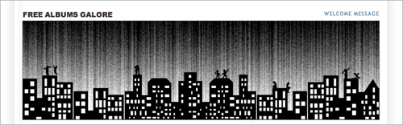

Free Albums Galore – Musik für umme finden

Immer öfter werden heutzutage Alben von den Künstlern für lau ins Netz gestellt, sozusagen als reines Promo-Produkt. Allerdings bringt einem das nicht viel, wenn es unbemerkt an einem vorbeigeht. Damit dies nicht geschieht, gibt es Free Albums Galore.
Ob die Trefferquote dieses Blogs hundert Prozent beträgt, kann ich nicht sagen. Aber auf jeden Fall spart man sich selbst das lästige Suchen. Und Convinience ist alles.
(via)
BTW: Die Headergrafik gefällt mir übrigens außerordentlich gut.


7 Kommentare zu "Free Albums Galore – Musik für umme finden"
- Externe Links im selben Fenster öffnen
- Externe Links in neuem Fenster öffnen
Zettt
Dankeschoen fuer den Backlink.
Wie ich bei mir im Blog bereits erwaehnte, habe ich dort schon einige schoene Sachen gefunden.
crucible
Oh Hölle! Da sind ein paar richtig gute Sachen dabei. Thx!!!!!!
Herschel Rubinstein
ich liebe die blogosphäre
crucible
Allerdings vermisse ich gute deutsche Traditionsmärsche!!!!!
Herschel Rubinstein
zeit für einen eigenen musikblog?!
daki
Geile Sache, lieber Herschel! Dann werde ich mich mal umschauen, ob das was taugt..
Herschel Rubinstein
nur ran an den speck. die charlatans habe ich mir schon gezogen. hat beim ersten hören einen vernünftigen eindruck gemacht.